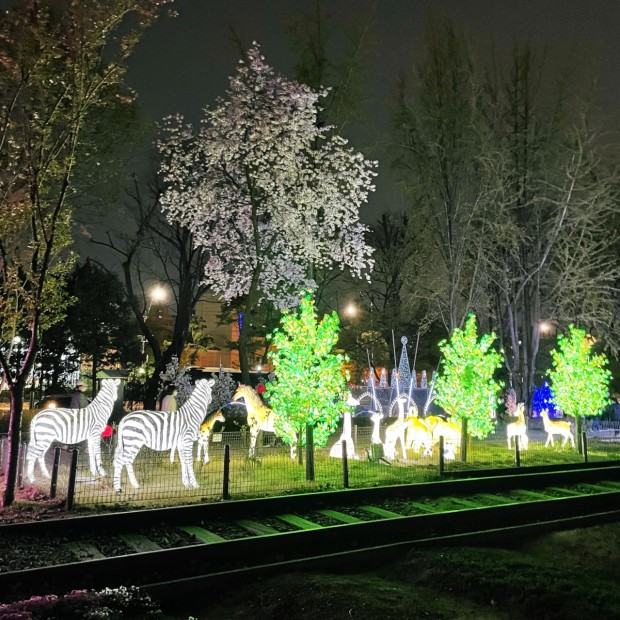

서울시립 북서울 미술관
중계동에 위치한 한적한 전시회. 유명작가들의 작품을 직접 만나볼수 있음

태강릉
서울특별시 노원구 화랑로에 있는 조선 중종의 두 번째 계비 문정왕후 윤씨의 무덤. 사적이다. 조선 제11대 왕 중종(中宗 재위 1506∼1544)의 두 번째 계비인 문정왕후(文定王后) 윤씨(1501~1565)의 무덤이다.

불빛정원
야경이 예쁘다는 불빛정원. 야경 데이트명소

불암산
서울 노원구와 경기 남양주시 별내면의 경계에 있는 산. 산 정상부에 있는 큰 바위가 마치 부처님의 모습을 닮았다고 하여 불암산이라고 부르게되었다.
노원구 맛집

페페그라노
서울 노원구 공릉로32길 5 1층
햇살도 좋고 맛도 좋은 생면파스타 맛집

스시하쿠야
서울 노원구 노원로 470 2층
100% 예약제로 운영되는 초밥집

돈부리
서울 노원구 동일로 1343 동일프라자빌딩
새우튀김이랑 사케동 진짜 맛있는 노원맛집

에그머니
서울 노원구 화랑로 421
특별한 오믈렛 메뉴가 있는 오믈렛 맛집